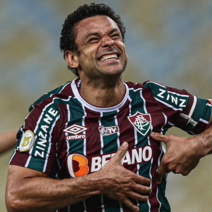
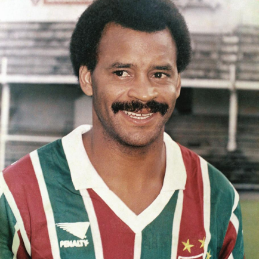
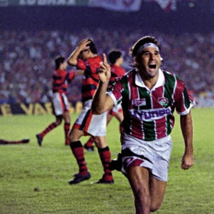

Fluminense
Fundado em 21 de julho de 1902, por Oscar Cox, jovem filho de um cidadão inglês vice-cônsul da Inglaterra no Equador, o Fluminense Football Club levava, à época, as cores cinza e branco. Cox é um dos grandes responsáveis pela chegada do futebol ao Brasil. Em diversas idas à “Terra da Rainha”, sempre trazia novidades, bolas, materiais esportivos. Também jogou, foi campeão Carioca de 1906, quando o Flu já era verde, branco e grená. Com problemas para adquirir o tecido cinza para o uniforme original, em 1904 foi aprovada a alteração, nascendo o Tricolor. Pioneiro, o Fluminense construiu o primeiro estádio de cimento da América Latina, o Estádio de Laranjeiras, que foi sede do Campeonato Sul-Americano de Seleções, atual Copa América, e dos Jogos Olímpicos Latino-Americanos, atualmente Jogos Pan-Americanos, e foi palco do primeiro título relevante da Seleção Brasileira.
Títulos
Campeonato Brasileiro: 4
Copa do Brasil: 1
Campeonato Carioca: 32
Torneio Rio/São Paulo: 3
Copa Rio Internacional: 1

Ídolos
- 
-

- 
- 
Fred
Assim que chegou ao clube o atacante participou como líder de uma das grandes reviravoltas do Brasileirão, quando salvou o clube do rebaixamento dado como certo. No ano seguinte estava no elenco que conquistou a mesma competição, em 2010, fato que voltou a se repetir em 2012, desta vez como protagonista da campanha. Fred já é o terceiro maior artilheiro da história do Fluminense, com 167 gols, ficando atrás apenas de Orlando Pingo de Ouro (184) e Waldo (319)
Castilho
"Suar a camisa, derramar lágrimas e dar o sangue pelo Fluminense, muitos fizeram. Sacrificar um pedaço do próprio corpo por amor ao Tricolor, somente um". Ao longo de 18 anos as escalações do time do Fluminense iniciavam com o nome de Castilho, que se tornou uma referência entre os goleiros do Brasil. Certa vez ao fraturar um dedo, preferiu amputá-lo a ter que ficar fora por um longo tempo do time tricolor
Assis
Principal referência da geração que encantou o país nos anos 80 com a camisa tricolor, Assis passou a ser chamado de Carrasco Rubro-Negro, por sempre decidir os jogos finais contra o Flamengo. Ao lado de Washington formou o famoso casal 20
Renato Gaúcho
Autor do famoso gol de barriga, que garantiu o título estadual de 1995, no ano da comemoração do centenário do rival Flamengo, Renato Gaúcho se tornou um dos principais personagens do Fluminense. Além disso, ele foi o treinador que dirigiu o clube na conquista da Copa do Brasil de 2007 e do vice da Copa Libertadores de 2008
Maracanã
Estádio Jornalista Mário Filho, mais conhecido como Maracanã, o popular Maraca (“semelhante a um chocalho” em tupi-guarani, devido ao som de pássaros que viviam por ali), é um estádio de futebol localizado na Avenida Presidente Castelo Branco, no Rio de Janeiro e inaugurado em 1950, durante o mandato do então General de Divisão e Prefeito do Distrito Federal do Rio, Marechal Ângelo Mendes de Moraes, tendo sido utilizado na Copa do Mundo de Futebol daquele ano. Desde então, o Estádio do Maracanã foi palco de grandes momentos do futebol brasileiro e mundial, como o milésimo gol de Pelé, finais do Campeonato Brasileiro, Carioca de Futebol, Taça Libertadores da América e do primeiro Campeonato Mundial de Clubes da FIFA, além de competições internacionais e partidas da Seleção Brasileira.

Torcida
O Fluminense Football Club é conhecido por possuir torcedores ilustres e famosos, entre eles presidentes, artistas, atletas e outras grandes personalidades, mas possui também, torcedores em todas as raças e camadas sociais, dada a popularidade conquistada nos campos de futebol.[1][2] A Torcida Tricolor sempre foi conhecida por protagonizar grandes espetáculos, tanto que na ainda década de 1950 foi premiada em 1950, 1951 e 1952, ao vencer as então famosas Competições de Torcidas, organizadas pelo Jornal dos Sports. Ao longo dos anos a tradição foi mantida e em 2008, na final da Copa Libertadores da América, no Maracanã lotado por cerca de 90.000 pessoas, a torcida do Fluminense promoveu um espetáculo jamais visto em um estádio de futebol, emocionando até mesmo, torcedores de outros clubes.